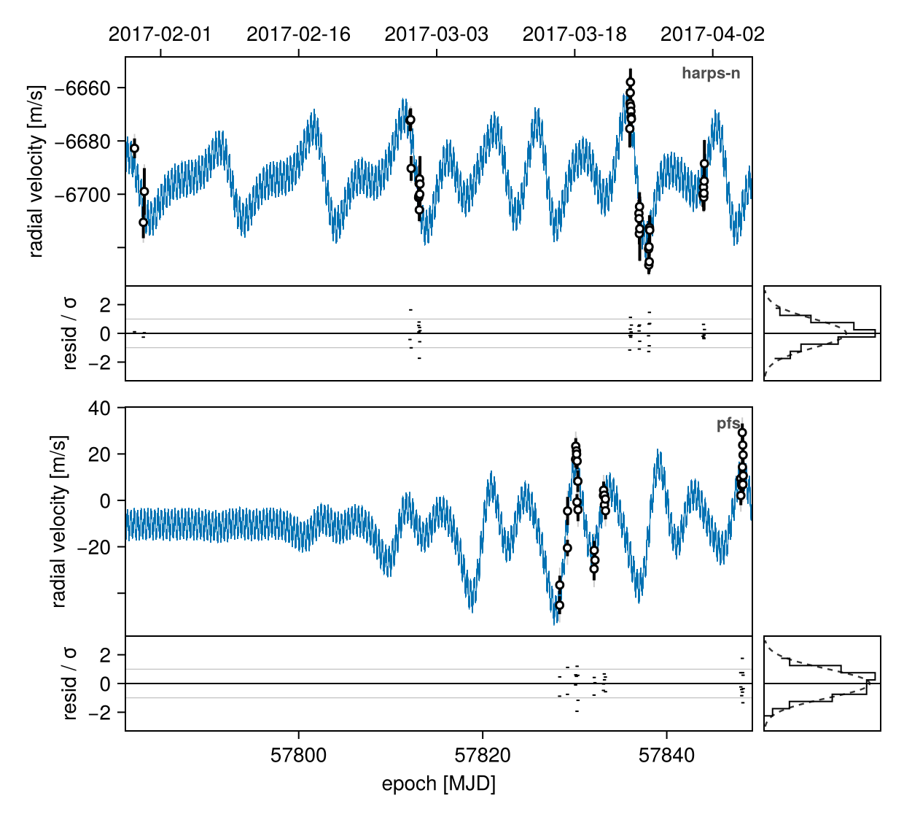
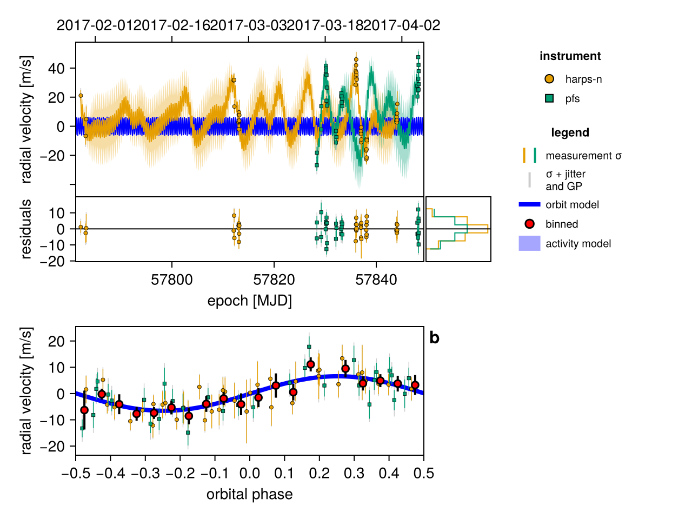
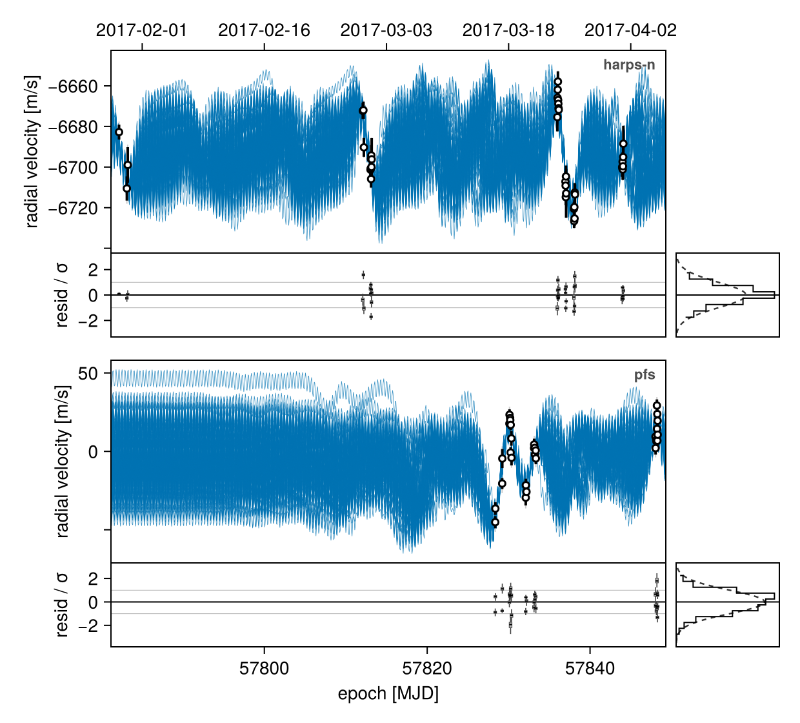
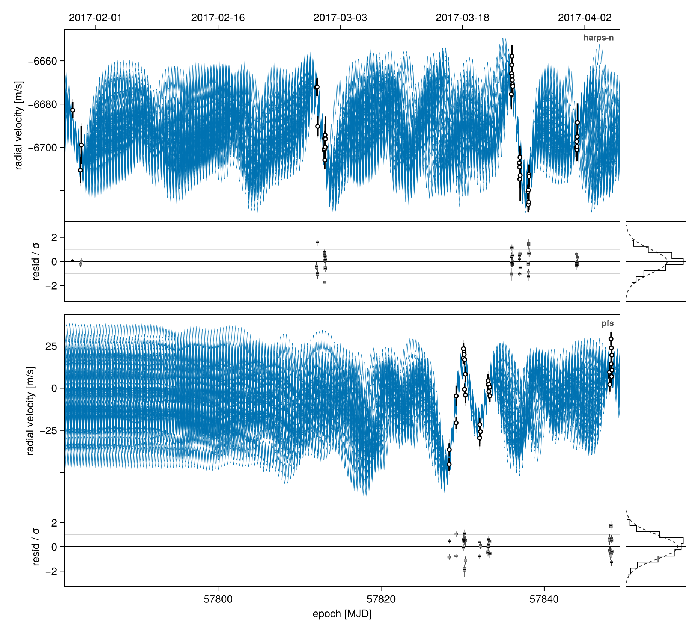
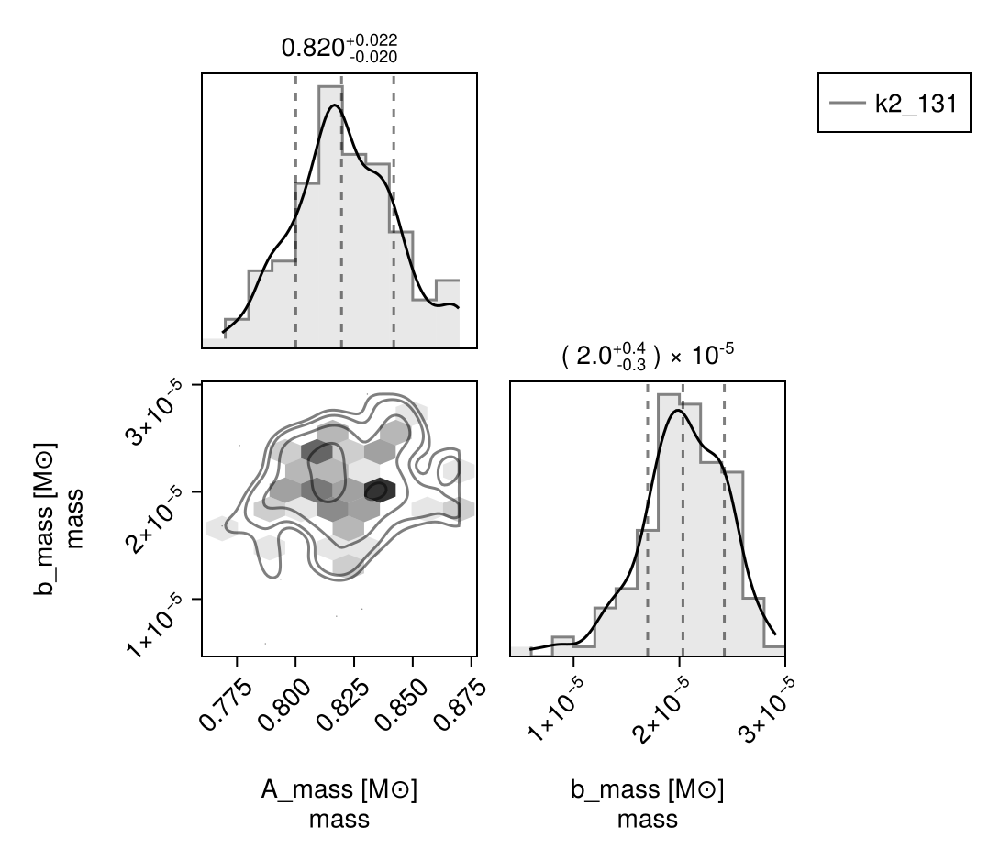
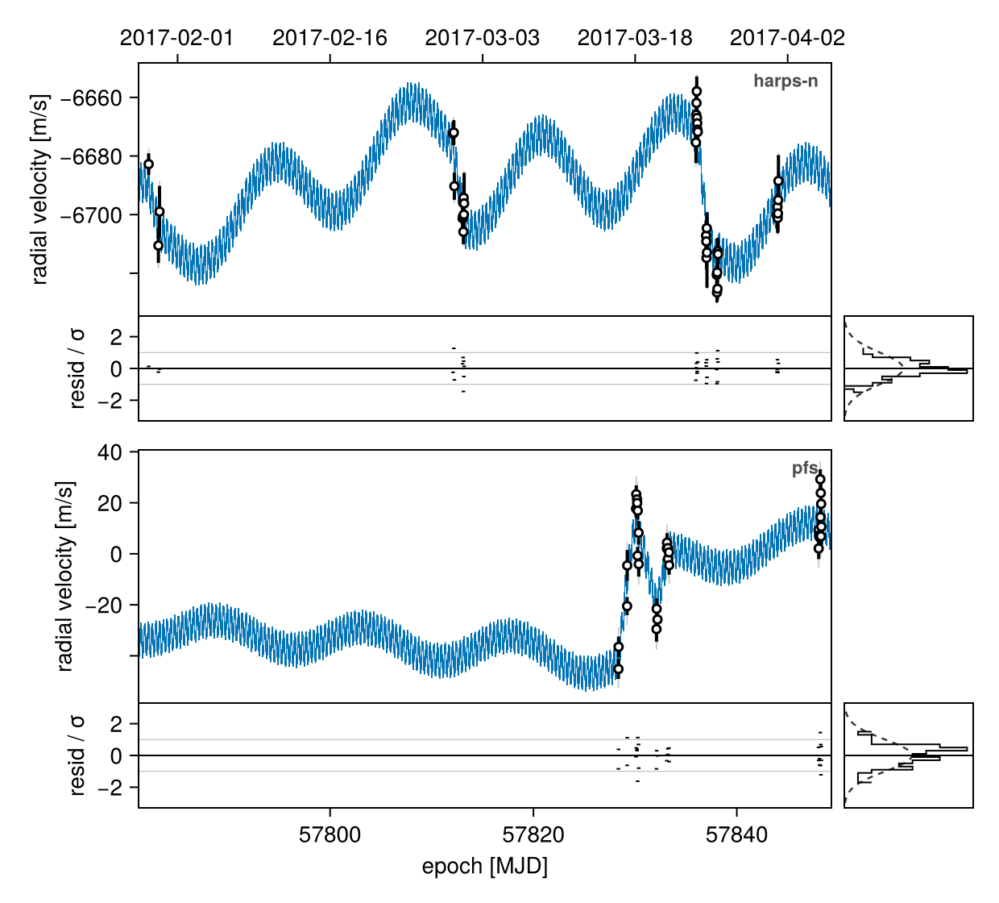
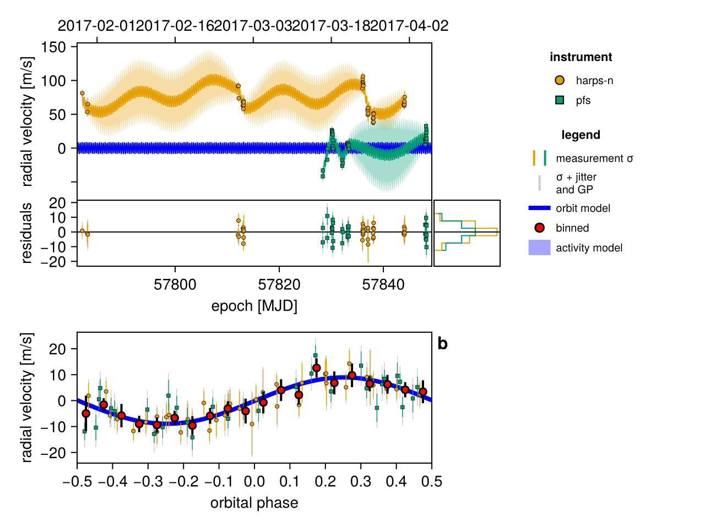
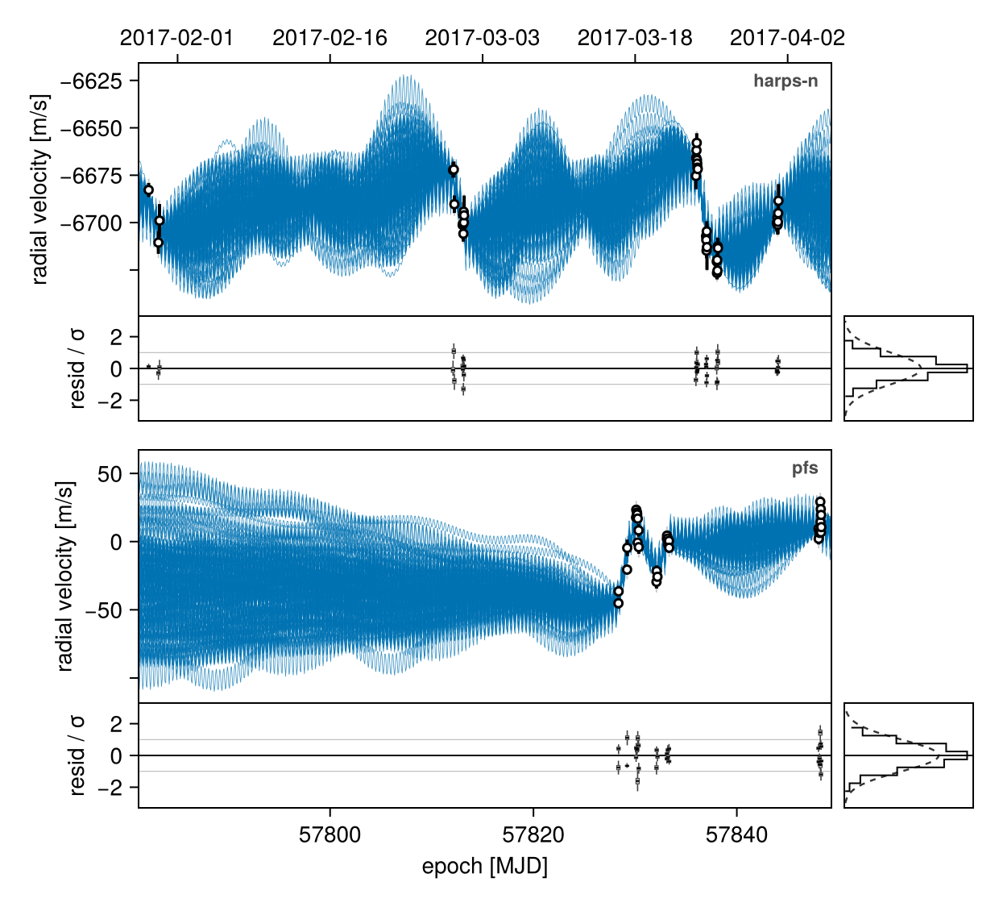

Fit Gaussian Process
This example shows how to fit a Gaussian process to model stellar activity in RV data. It continues from Basic RV Fit.
There are two different GP packages supported by OctofitterRadialVelocity: AbstractGPs, and Celerite. GP models are significantly more computationally expensive than non-GP models. Plan for longer sampling times when using Gaussian processes.
For this example, we will fit the orbit of the planet K2-131 to perform the same fit as in the RadVel Gaussian Process Fitting tutorial.
We will use the following packages:
using Octofitter
using OctofitterRadialVelocity
using PlanetOrbits
using CairoMakie
using PairPlots
using CSV
using DataFrames
using Distributions
using PigeonsWe will pick up from our tutorial Basic RV Fit with the data already downloaded and available as a table called rv_dat:
rv_file = download("https://raw.githubusercontent.com/California-Planet-Search/radvel/master/example_data/k2-131.txt")
rv_dat_raw = CSV.read(rv_file, DataFrame, delim=' ')
rv_dat = DataFrame();
rv_dat.epoch = jd2mjd.(rv_dat_raw.time)
rv_dat.rv = rv_dat_raw.mnvel
rv_dat.σ_rv = rv_dat_raw.errvel
tels = sort(unique(rv_dat_raw.tel))The bodies are the same as in the basic fit, so we define them once here and reuse them for both examples:
A = Body(
name="A",
variables=@variables begin
mass ~ truncated(Normal(0.82, 0.02), lower=0.1) # M⊙ (Baines & Armstrong 2011)
end
)
b = Body(
name="b",
about=A,
variables=@variables begin
# Radial-velocity-only fit: fix the inclination and the node.
i = pi/2
Ω = 0.0
e = 0.0
ω = 0.0
# To match RadVel we put the prior on the period directly. `P` is an
# orbital element, in days.
P ~ truncated(Normal(0.3693038, 0.0000091), lower=0.0001)
τ ~ UniformCircular(1.0)
tp = τ * P + 57782 # reference epoch for τ. Choose an MJD date near your data.
# Minimum planet mass (really m·sin i). Masses are solar masses, and
# `mjup` is a plain multiplicative constant.
mass ~ LogUniform(0.001mjup, 10mjup)
end
)Gaussian Process Fit with AbstractGPs
Let us now add a Gaussian process to model stellar activity. This should improve the residuals.
We start by writing a function that creates a Gaussian process kernel from a set of observation parameters. We will create a quasi-periodic kernel. We provide this function as an argument gaussian_process to the likelihood constructor:
using AbstractGPs
gp_explength_mean = 9.5*sqrt(2.) # sqrt(2)*tau in Dai+ 2017 [days]
gp_explength_unc = 1.0*sqrt(2.)
gp_perlength_mean = sqrt(1. /(2. *3.32)) # sqrt(1/(2*gamma)) in Dai+ 2017
gp_perlength_unc = 0.019
gp_per_mean = 9.64 # T_bar in Dai+ 2017 [days]
gp_per_unc = 0.12
quasiperiodic = θ_obs -> GP(
θ_obs.η_1^2 *
(SqExponentialKernel() ∘ ScaleTransform(1/(θ_obs.η_2))) *
(PeriodicKernel(r=[θ_obs.η_4]) ∘ ScaleTransform(1/(θ_obs.η_3)))
)
rvlike_harps = RadialVelocityObs(
rv_dat[rv_dat_raw.tel .== "harps-n", :];
target=A, ref=Barycentre,
name="harps-n",
gaussian_process = quasiperiodic,
variables=@variables begin
offset ~ Normal(-6693,100) # m/s
jitter ~ LogUniform(0.1,100) # m/s
# Add priors on GP kernel hyper-parameters.
η_1 ~ truncated(Normal(25,10),lower=0.1,upper=100)
# Important: ensure the period and exponential length scales
# have physically plausible lower and upper limits to avoid poor numerical conditioning
η_2 ~ truncated(Normal(gp_explength_mean,gp_explength_unc),lower=5,upper=100)
η_3 ~ truncated(Normal(gp_per_mean,1),lower=2, upper=100)
η_4 ~ truncated(Normal(gp_perlength_mean,gp_perlength_unc),lower=0.2, upper=10)
end
)
rvlike_pfs = RadialVelocityObs(
rv_dat[rv_dat_raw.tel .== "pfs", :];
target=A, ref=Barycentre,
name="pfs",
gaussian_process = quasiperiodic,
variables=@variables begin
offset ~ Normal(0,100) # m/s
jitter ~ LogUniform(0.1,100) # m/s
η_1 ~ truncated(Normal(25,10),lower=0.1,upper=100)
η_2 ~ truncated(Normal(gp_explength_mean,gp_explength_unc),lower=5,upper=100)
η_3 ~ truncated(Normal(gp_per_mean,1),lower=2, upper=100)
η_4 ~ truncated(Normal(gp_perlength_mean,gp_perlength_unc),lower=0.2, upper=10)
end
)
## No change to the rest of the model
sys = System(
name = "k2_131",
bodies=[A, b],
observations=[rvlike_harps, rvlike_pfs],
)
model = Octofitter.LogDensityModel(sys)LogDensityModel for System k2_131 of dimension 17 and 70 epochs with fields .ℓπcallback and .∇ℓπcallback
Note that the two instruments do not need to use the same Gaussian process kernels, nor the same hyper parameter names.
Tip: If you want the instruments to share the Gaussian process kernel hyper parameters, move the variables up to the system's @variables block, and forward them to the observation variables block e.g. η_1 = system.η_1, η_2 = system.η_2.
Initialize the starting points, and confirm the data are entered correcly:
init_chain = initialize!(model)
octoplot(model, init_chain)
Sample from the model using MCMC (the no U-turn sampler)
using Pigeons
chain, pt = octofit_pigeons(model, n_rounds=7)
chainChains MCMC chain (128×27×1 Array{Float64, 3}):
Iterations = 1:1:128
Number of chains = 1
Samples per chain = 128
Wall duration = 342.2 seconds
Compute duration = 342.2 seconds
parameters = A_mass, b_P, b_τx, b_τy, b_mass, b_τ, b_i, b_Ω, b_e, b_ω, b_tp, harps_n_offset, harps_n_jitter, harps_n_η_1, harps_n_η_2, harps_n_η_3, harps_n_η_4, pfs_offset, pfs_jitter, pfs_η_1, pfs_η_2, pfs_η_3, pfs_η_4
internals = loglike, logpost, logprior, pigeons_logpotential
Use `describe(chains)` for summary statistics and quantiles.
For real data, we would want to increase the number of rounds.
Plot the fit: the RV time series, the residual strip, and a phase-folded panel for the planet.
Plot one draw. rvplot conditions the Gaussian process on that draw's own residuals: the activity model is drawn as a band around the orbit, taken off the residuals and the phase-folded points, and its predictive variance added to the error bars.
rvplot(model, chain)
Plot a sample of many draws. Each curve is that draw's orbit plus that draw's own conditioned Gaussian process, so the ensemble tracks the activity instead of running through the middle of it, and the spread between the curves is the uncertainty:
octoplot(model, chain)
A band per draw was tried in v8 and is unreadable — 250 envelopes, each belonging to a different activity model. The band is a single-draw device and lives in rvplot. To see the Keplerian signal on its own, fold it: octoplot(model, chain; show_phase=true). gpcurve=false goes back to plain orbit curves.
Some optional tweaks to the appearance:
octoplot(
model,
chain,
N=50, # only plot 50 samples
figscale=1.5, # make it larger
)
Corner plot:
octocorner(model, chain, small=true)
Gaussian Process Fit with Celerite
We now demonstrate an approximate quasi-static kernel implemented using Celerite. For the class of kernels supported by Celerite, the performance scales much better with the number of data points. This makes it a good choice for modelling large RV datasets.
Make sure that you type using OctofitterRadialVelocity.Celerite and not using Celerite. We vendor a version that works well with Octofitter.
using OctofitterRadialVelocity.Celerite
quasistatic = θ_obs -> Celerite.CeleriteGP(
Celerite.RealTerm(
#=log_a=# log(θ_obs.B*(1+θ_obs.C)/(2+θ_obs.C)),
#=log_c=# log(1/θ_obs.L)
) + Celerite.ComplexTerm(
#=log_a=# log(θ_obs.B/(2+θ_obs.C)),
#=log_b=# -Inf,
#=log_c=# log(1/θ_obs.L),
#=log_d=# log(2pi/θ_obs.Prot)
)
)
rvlike_harps_cel = RadialVelocityObs(
rv_dat[rv_dat_raw.tel .== "harps-n", :];
target=A, ref=Barycentre,
name="harps-n",
gaussian_process = quasistatic,
variables=@variables begin
offset ~ Normal(-6693,100) # m/s
jitter ~ LogUniform(0.1,100) # m/s
# Add priors on GP kernel hyper-parameters.
B ~ Uniform(0.00001, 2000000)
C ~ Uniform(0.00001, 200)
L ~ Uniform(2, 200)
Prot ~ Uniform(8.5, 20)
end
)
rvlike_pfs_cel = RadialVelocityObs(
rv_dat[rv_dat_raw.tel .== "pfs", :];
target=A, ref=Barycentre,
name="pfs",
gaussian_process = quasistatic,
variables=@variables begin
offset ~ Normal(0,100) # m/s
jitter ~ LogUniform(0.1,100) # m/s
B ~ Uniform(0.00001, 2000000)
C ~ Uniform(0.00001, 200)
L ~ Uniform(2, 200)
Prot ~ Uniform(8.5, 20)
end
)
## No change to the rest of the model
sys_cel = System(
name = "k2_131_celerite",
bodies=[A, b],
observations=[rvlike_harps_cel, rvlike_pfs_cel],
)
using DifferentiationInterface, FiniteDiff
model_cel = Octofitter.LogDensityModel(sys_cel, autodiff=AutoFiniteDiff())LogDensityModel for System k2_131_celerite of dimension 17 and 70 epochs with fields .ℓπcallback and .∇ℓπcallback
The Celerite implementation doesn't support our default autodiff backend (ForwardDiff.jl), so either (A) switch the gradients over to finite differences, as above, and then sample with the Pigeons slice sampler, which doesn't require gradients at all, or (B) use Enzyme autodiff.
Initialize the starting points, and confirm the data are entered correcly:
init_chain_cel = initialize!(model_cel)
octoplot(model_cel, init_chain_cel)
using Pigeons
chain_cel, pt = octofit_pigeons(model_cel, n_rounds=7)
chain_celChains MCMC chain (128×27×1 Array{Float64, 3}):
Iterations = 1:1:128
Number of chains = 1
Samples per chain = 128
Wall duration = 53.46 seconds
Compute duration = 53.46 seconds
parameters = A_mass, b_P, b_τx, b_τy, b_mass, b_τ, b_i, b_Ω, b_e, b_ω, b_tp, harps_n_offset, harps_n_jitter, harps_n_B, harps_n_C, harps_n_L, harps_n_Prot, pfs_offset, pfs_jitter, pfs_B, pfs_C, pfs_L, pfs_Prot
internals = loglike, logpost, logprior, pigeons_logpotential
Use `describe(chains)` for summary statistics and quantiles.
Plot one draw:
rvplot(model_cel, chain_cel)
Plot a sample of many draws:
octoplot(model_cel, chain_cel)
Leave-one-out (or many out) cross validation is supported for both GP backends. The code works to do the right thing behind the scenes, which is a bit more complicated in models with GPs: the held-out points are scored against the GP conditioned on the rows that were kept.